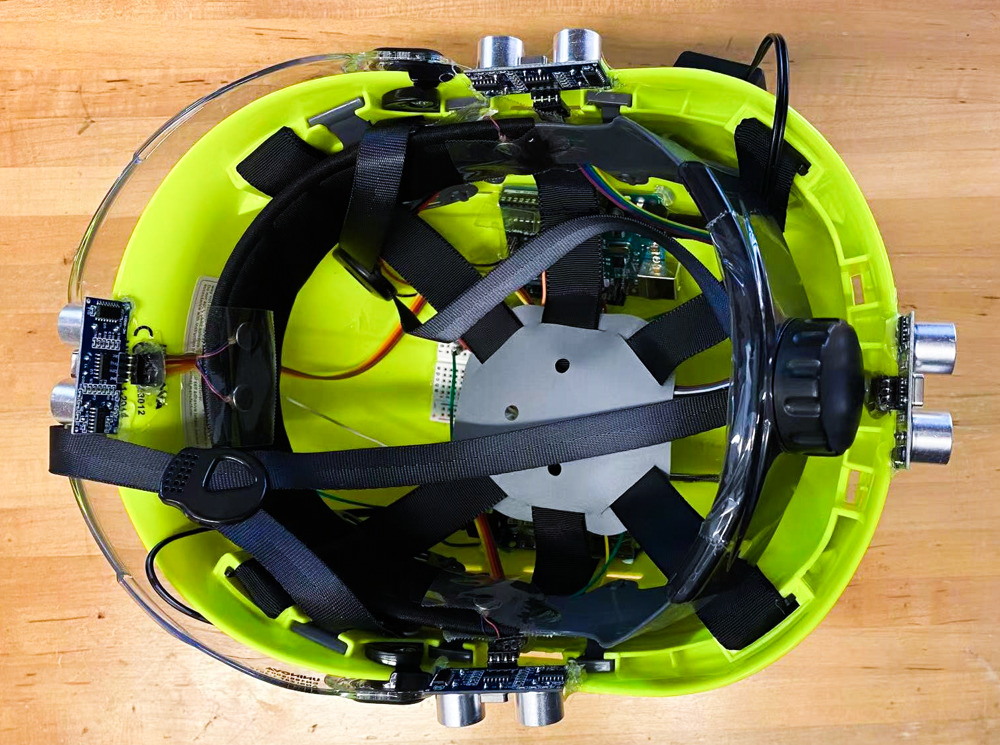
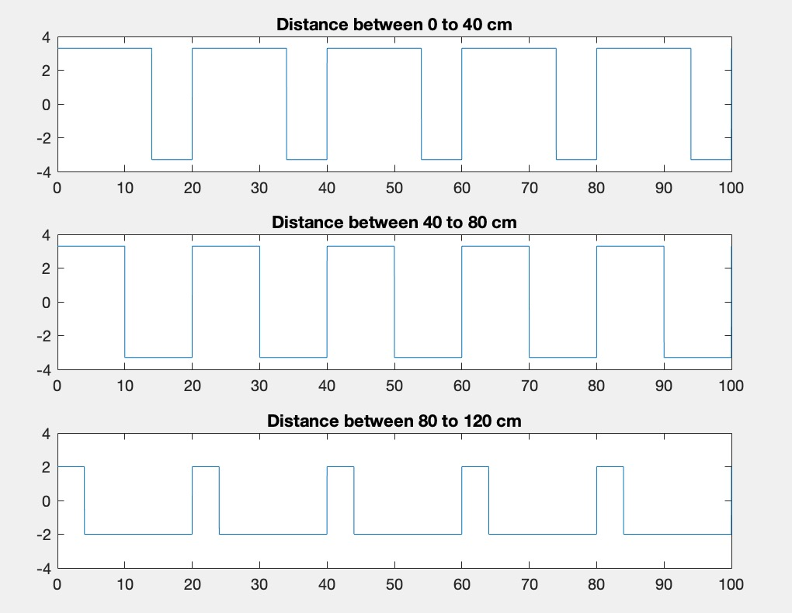

Haptic Vision Cap For
Visually Impaired Users
Haptic Interface Design for Human-Robot Interaction
Whiting School of Engineering @ Johns Hopkins University
Group Memebers
Zhijing Hu, Yang Meng, Shengni Xu, Xuwen Lin
What is the “Magic Cap X”?
Our project, named as “Magic Cap X”, is designed to be a haptic warning system, which can be installed on a cap, for visually imparied people to avoid collisions in most cases in real life.

Currently, guide long canes and guide dogs are the most famous and most commonly-used mobility assistance for visually impaired people to avoid obstacles. Usually, visually impaired people receive navigation assistance from them. However, there is no equipment which can help visually impired people avoid collisions from obstacles which appear at head height, such as the street signs in the way, flying balls, tree branches, etc. Most importantly, both the guide dogs and guide long canes have limited feedback signals to the users, and both of them only provide indirect signals to users, causing a delayed reaction time.
From our perspective, if variable assistant tools could be used together and direct signals could be provided to shorten the reaction time, the potential risks for visually impaired users will be much lower. Designing a portable, efficient and affordable equipment as an extra assistant tool for the visually impaired people, would be our main project goal. Therefore, the idea about assembling the sensing and vibration system on the cap came up.
The cap system will be mainly focusing on realizing sensing and detecting functionability. In contrast with traditional assistant tools, not only to detect the incoming obstacles in the front, but also to detect multi-directions out of the normal sight, such as a losing car coming behind to the users. All these features help our design to be a powerful aid for those users who have visually impaired disabilities from the collision at head or shoulder. We prefer that users could wear the haptic vision cap as they are using the long canes or with the guide dogs. If not, our cap still could be a great assistant tool for the users to detect the coming obstacles and dangers.

A construction hard cap made in ABS (Acrylonitrile Butadiene Styrene) would be the main body of the device. Four HC-SR04 ultrasonic sensors are used to detect surrounding objects in four different directions (front, back, left, right). Two Arduino boards, series in R3 Board ATmega328P, are installed, and two mini vibrator motors are assigned to each Arduino board as detection equipment, transmitting feedback signals from two ultrasonic sensors to the users. Also, two 9V rechargeable batteries will be the safe power for each subsystem. All these features help our project become a simple version of a real cutaneous device for visually impaired users, as it delivers vibration signals to the skins of the user's head while wearing the cap. Transferring detection signals to vibration signals is the main function of our device, and the skins are the direct sensory receptors of our device during the experiment tests.
Stepping method is applied to map the distance. In general obstacles encountered cases, a stationary obstacle would be set up: a box wall. The participants would be asked to walk towards the obstacle with the device on. The starting point would be 6 m (around 6 steps) away from the obstacles. Take 1 m (1 step of the participants) as a scale and ask them what they feel about the vibration at different scaling points (point at 2/4/6 m). The closer the distance between the coming obstacles and users, the larger the frequency of vibrations would be caused.

Now, it is designed to use 4 vibration motors for a simple version of the haptic cap. While in a real life situation, there might be more complicated situations such as the flying objects coming in random angles, or even a larger obstacle than the one in our experiment, etc. All those possibilities need more actions on improving our system accuracy. More vibrators are needed to be installed at the inside surface of the cap, providing more accurate and distinguishable vibration signals to the users. Variable signal feedback could be added. The sound signal could be the secondary feedback mode for the users. At different scaling points, the system will provide hearable information, such as what is the approximate distance between users and obstacles, how much time left to react, or what action is recommended for the users to avoid collision.
Similarly, it comes with the problems about the accuracy of detection. More advanced sensing system could be built if there are more resources. For example, digital cameras with faster data processing systems are recommended to be developed for the device such as sending processing images and interacting with an ideal cloud database through mobile phones or smart watches via WIFI. The system could be later developed and enhanced through Machine learning and Deeping learning. As the digital cam catches the real time images or videos of the surroundings, the system could quickly respond if there are any obstacles or potential dangers. In such a way, both the faster data processing system, and the more accurate signal feedback could be achieved.
To check out the details, just click on my GitHub page of this project: Haptic Vision Cap.